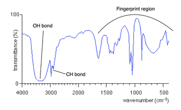
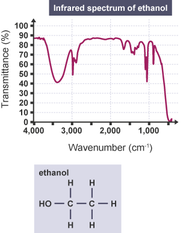

Functional group
| Vietnamese | Nhóm chức ( ) |
|---|---|
| English | Functional group |
| Pronunciation | /ˈfʌŋkʃənəl ɡruːp/ |
| Word type | noun (as labelled in the PDFs) |
Topic 1 — Meaning (Vietnamese)
Nhóm chức là nguyên tử hoặc nhóm nguyên tử trong phân tử gây ra những tính chất hóa học đặc trưng của hợp chất hữu cơ.
Meaning (English)
A group of atoms that gives a chemical compound its characteristics, such as the ability to react with particular substances. (Nhóm chức là nguyên tử hoặc nhóm nguyên tử trong phân tử gây ra những tính chất hóa học đặc trưng của hợp chất hữu cơ.)
Example
Carbonyls and alkenes, two of the most common functional groups in organic chemistry, generally do not react with one another. (Carbonyl và alkene, hai trong số những nhóm chức phổ biến nhất trong hóa học hữu cơ, nhìn chung không phản ứng với nhau.)
Images from the PDFs



